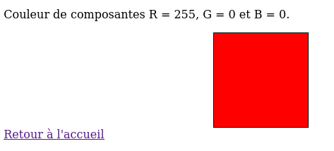

Développement côté serveur en PHP
Site Web dynamique
PHP est un langage interprété qui s’exécute sur un serveur Web. Lorsque le serveur reçoit les données d’un formulaire d’un client, il peut les transmettre à un script PHP qui pourra les utiliser pour modifier une base de données ou générer à la volée le contenu HTML qui sera retournée au client.
Une page Web est dite dynamique si son contenu dépend du client qui la demande et de son contexte (temps, espace, plateforme). Par opposition, une page Web est statique si son contenu est le même quel que soit le client et le contexte.
Un site Web dynamique s’appuie sur trois composants : un langage interprété comme PHP, Python ou Node.js, un serveur Web comme Apache ou Nginx et un système de gestion de bases de données comme MySQL ou MariaDb.
PHP est souvent associé avec Apache et MysSQL pour former la pile Lamp nécessaire pour accueillir un site Web dynamique comme un CMS de type Wordpress ou Drupal.
Les fichiers PHP portent l’extension .php et la syntaxe du langage s’inspire de celles de Bash et Java, en particulier les blocs sont délimités par des accolades, chaque instruction doit se terminer par un symbole ; et chaque nom de variable commence par le symbole $.
On donne ci-dessous un exemple de code PHP, exécutable à partir de l’URL http://frederic-junier.org/NSI/sandbox/heure.php.
Pour générer une page Web dynamiquement, le code PHP peut être inséré directement dans du code HTM, à l’intérieur de balises <?php et ?>. Les commentaires peuvent être placés entre deux symboles /* et */.
Un premier exemple
Ouvrir dans un navigateur Web la page https://repl.it/@fredericjunier/1NSI-PHP-Ex1-Eleve.
La page s’ouvre sur un environnement de programmation en PHP sur la plateforme https://repl.it. Un serveur Apache avec interpréteur PHP s’exécute dans un environnement isolé.
Il n’est pas nécessaire de se créer un compte sur celle-ci pour travailler. Dès la première modification du fichier ouvert dans l’éditeur, on est redirigé vers une page anonyme en lecture/écriture.
L’interface se divise en trois zones :
- à gauche l’explorateur de fichiers, il est possible de créer des nouveaux fichiers dans l’interface, de les téléverser de tout télécharger sous forme d’archive zip
- au centre se trouve l’éditeur de fichier pour saisir ou modifier du code
- à droite se trouve deux fenêtres de sortie : en haut un affichage de page Web et en bas la console affichant les commandes exécutées par le serveur
Dans la page d’accueil, cliquer sur le lien Formulaire de connexion avec la méthode GET. Remplir le formulaire avec un nom quelconque pour l’identifiant et
secreten minuscules pour le mot de passe. Réaliser un autre envoi avec un mot de passe incorrect. Le code source du formulaire est affiché dans la zone d’édition de l’image précédente. Les dpnnées du formulaire sont envoyées par la méthode GET au programmelogin.phpqui va les traiter. Cliquer surlogin.phpdans l’explorateur de fichier pour afficher son code source comme ci-dessous :<!DOCTYPE html> <html lang="fr"> <head> <title>Affichage de l'âge avec PHP </title> <meta charset="utf-8"> </head> <body> <div> <?php echo "<p> Il est " . date("H:i:s") . "</p>"; /* commentaire multiligne */ if ( isset($_GET['ident']) && isset($_GET['pass']) && ( $_GET['pass'] == 'secret' ) ) { echo "<p> Bienvenue " . $_GET['ident'] . "</p>"; } elseif ( !( empty($_POST['ident']) || empty($_POST['pass']) ) && ( $_POST['pass'] == 'secret' ) ) { echo "<p>Bienvenue " . $_POST['ident'] . "</p>"; } else { echo "<p> Échec de la connexion. </p>"; //commentaire isolé } ?> </div> <a href="index.php">Retour à l'accueil</a> </body> </html>On peut relever dans cet exemple quelques traits du langage PHP, que nous survolerons :
- On l’a déjà dit le code PHP peut s’insérer dans du code HTML, entre une des balises
<?phpet?> - Chaque instruction se termine par un symbole
; - On peut insérer des commentaires multilignes ou isolés.
- Les noms de variables doivent être préfixés par le symbole
$. $_GETest une variable spéciale qui va recevoir des données de formulaire transmises par la méthode$_GET. Il existe aussi une variable spéciale$_POST. Il s’agit de tableaux associatifs comme les dictionnaires en Python.- L’affichage sur la sortie standard du programme se fait avec
echocomme en Bash, et les chaînes de caractères sont concaténés avec le symbole.. - Les structures de contrôle (conditions et boucles) ont des structures et des mots clefs similaires à tous les autres langages procéduraux. Contrairement à Python, l’indentation n’a qu’une valeur de présentation, les blocs d’instructions doivent donc être délimités par des symboles
{et}. - Pour tester si une variable est définie on peut utiliser la fonction
issetou son contraireempty. - Les opérateurs logiques sont les mêmes qu’en C,
&&pourand,||pouror,!pournotet il est conseillé d’utiliser des parenthèses pour clarifier l’ordre souhaité.
- On l’a déjà dit le code PHP peut s’insérer dans du code HTML, entre une des balises
Si on édite le code source de la page d’accueil
index.php, on peut remarquer des instructions PHP comme<?php include('menu.php') ?>et si on édite le fichiermenu.phpon y trouve un menu sous forme de liste en HTML. On peut donc utiliser PHP comme gestionnaire de templates HTML et centraliser du code.
Une peu d’exercice
Ouvrir dans un navigateur Web la page https://repl.it/@fredericjunier/1NSI-PHP-Ex1-Eleve présentée dans l’exemple 1.
Éditer le fichier
formulaire-age.phpet compléter le formulaire ci-dessous avec un élément<input type="number" name="a">de typenumberpour que l’utilisateur puisse saisir une date de naissance comprise entre 1900 et 2020 et que cette valeur soit associée au nomaet transmise pour traitement au scriptage.phpavec la méthode GET.<form action="age.php" method="GET"> <label for="naissance">Saisissez votre date de naissance </label> <br> <!-- compléter --> </form>Tester l’envoir du formulaire puis retourner à la page d’accueil.
Dans la page d’accueil, cliquer sur le lien Formulaire de connexion avec la méthode POST, saisir dans le champ identifiant
<script>alert('Hack !')</script>et dans le champ mot de passesecretpuis envoyer les données. Que se passe-t-il ?Faire un nouveau test en saisissant
<script>window.location.href='index.php'</script>. Que se passe-t-il ?Résumer la définition d’une faille Cross-site scripting (XSS) à partir de l’article https://developer.mozilla.org/fr/docs/Glossaire/Cross-site_scripting.
Modifier le code PHP du fichier
login.phppour résoudre en partie cette faille à l’aide de la fonctionhtmlspecialcharsprésenté dans cet article https://www.w3schools.com/php/php_form_validation.asp.Dans la page d’accueil, cliquer sur le lien Formulaire d’affichage de couleur (R,G,B). On arrive sur un formulaire constitué de trois champs
<input>de typenumberoù l’utilisateur peut saisir l’une des composantes (R,G,B) d’une couleur comprise entre 0 et 255. Les données sont envoyées au fichierrgb.php. Éditer ce fichier depuis l’explorateur et le compléter pour qu’il puisse traiter les données du formulaire et modifier la propriété CSSbackgroundde l’élément<div>identifié par#couleurafin d’afficher la couleur correspondante. Les parties de code à compléter sont marquées par des commentaires.

Dans la page d’accueil, cliquer sur le lien Formulaire de changement d’unité de température. On arrive sur un formulaire
temperature.phpconstitué d’un champ<select>permettant de choisir une unité source et un champ<input>de typenumberpour saisir une mesure de température. Les données du formulaire sont envoyées àtemperature.phpqui supporte donc à la fois la saisie et le traitement des données. Éditer ce fichier depuis l’explorateur et le compléter pour qu’il puisse traiter les données du formulaire en convertissant la mesure de température de Celsius en Fahrenheit ou réciproquement.Dans la page d’accueil, cliquer sur le lien Formulaire d’affichage de table de multiplication. On arrive sur un formulaire
multiplication.phpconstitué d’un champ champ<input>de typenumberpour saisir un facteur. Les données du formulaire sont envoyées au même fichiermultiplication.php. Éditer ce fichier depuis l’explorateur et le compléter pour qu’il puisse traiter les données du formulaire en affichant la table des 11 premiers multiples du nombre choisi.

QCM de type E3C2.
Parmi les quatre propositions suivantes, laquelle est la seule à correspondre à un entête correct de formulaire d’une page HTML ?
- Réponse A :
<form method="formulaire.php" action="submit"> - Réponse B :
<form method="post" action=onclick()> - Réponse C :
<form method="get" action="arret.php"> - Réponse D :
<form method="post" action=arret.php>
- Réponse A :
Quel langage est interprété ou exécuté côté serveur ?
- Réponse A : JavaScript
- Réponse B : PHP
- Réponse C : HTML
- Réponse D : CSS
Pour analyser les réponses saisies par l'utilisateur dans un formulaire d’une page Web personnelle, hébergée chez unfournisseur d'accès à internet, on dispose du code suivant :
Où s’exécutera ce code ?
- Réponse A : dans le premier routeur permettant d’accéder au serveur
- Réponse B : dans le dernier routeur permettant d’accéder au serveur
- Réponse C : dans le serveur qui héberge la page personnelle
- Réponse D : dans la machine de l’utilisateur qui consulte la page personnelle
Le site internet d’un quotidien d’information permet aux visiteurs de laisser des commentaires textuels. Ces commentaires doivent être visibles par les autres visiteurs. Laquelle des affirmations suivantes est correcte ?
- Réponse A : Il suffit que la page HTML contienne des champs de la forme
<textarea> - Réponse B : Il suffit que la page HTML contienne des champs de la forme
<textarea>et d’utiliser JavaScript pour enregistrer les commentaires - Réponse C : Il faut un programme en PHP ou un script Python sur le serveur pour traiter les données
- Réponse D : Non, ce n’est pas possible avec la technologie actuelle
- Réponse A : Il suffit que la page HTML contienne des champs de la forme
Dans quels langages les balises
<img>et<form>sont-elles utilisées ?- Réponse A : Python
- Réponse B : HTML
- Réponse C : Javascript
- Réponse D : PHP